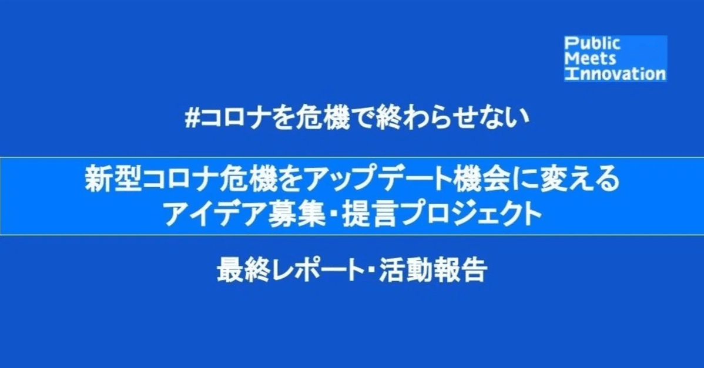

本レポートは4月13日から6月30日の期間で実施した「新型コロナ危機をアップデート機会に変えるアイデア・提言を募集するプロジェクト」で集まったアイデアの活動報告レポートです。アイデアの投稿にご協力を頂いた皆様、プロジェクト協力を頂きましたパートナー団体様、有難うございました。
アイデア公開データURL：https://docs.google.com/spreadsheets/d/17Smpka5nDULYc5HQQ47XXmu_-zWt17TEBNfDHOGmlB0/edit?usp=sharingプロジェクトページ: https://note.com/pmi
投稿されたアイデアは452件
本プロジェクトではPMI独自のフレームワークを作成し私たちの暮らしを構成する５つの要素（仕事・生活・娯楽・教育・医療）それぞれの機能において暮らしを助ける具体的なサービスや支援策、これからの暮らしそのものをアップデートする制度やアイデアをTECH（イノベーション）、POLICY（制度・ルール）、CULTURE（規範・文化）の３つの視点からアイデアを募集しました。アイデア全体のサマリは中間レポートにて公開をしておりますが、PMIメンバーの中でピックアップした４つのアイデアを紹介！
パートナーとの取り組み
本プロジェクトでは下記の自治体・団体・企業にパートナー団体としてご参画を頂き、アイデアの収集に向けた広報協力や実現に向けた連携等をさせていただきました。またアイデアリストとサマリレポートは渋谷区・福岡市・徳島市・神戸市の４つの自治体にお届けしています。
また、アイデアの実現に向けた取り組みとして各団体と連携をしています。
PoliPoli x PMI 取り組みの概要プロジェクトに投稿された360のアイデアのうち（2020年5月15日時点）「POLICY-政策提言」分野の提言アイデアをセレクトし、『政治家に直接声を届けられる』政治プラットフォームのPoliPoli上から、国会議員に向けてお届けしました。
Pnika x PMI 取り組みの概要
プロジェクトに投稿されたアイデアのうちPolicyに関係するアイデアをピックアップして専門家と論点を整理。Pnika上のプラットフォームでオーナーとチームをつくっていくネクストアクションに向けて特集記事を公開し一緒にルールメイキングを実装するメンバーを募集していきます。（9月開始予定）
オンラインイベントを開催
2020年7月13日、一般社団法人PublicMeetsInnovation主催 オンラインイベント「NEW PUBLIC 〜ルールはつくれる、変えられる。イノベーションを社会実装するために 」を開催しました。本イベントでは、プロジェクトの実装に向けた進捗を共有すると共に、第一線で活躍する登壇者と共に、PMIが掲げる「イノベーションを社会と接続する」という視点で、これからの公共とイノベーションの未来を議論しました。
セッションA / どうしたら日本はテック国になれるのか登壇者MyData Global 理事 安田 クリスティーナ 氏東京都副都知事 宮坂 学 氏慶応義塾大学医学部 医療政策・管理学教授 宮田裕章 氏PublicMeetsInnovation 理事 日比谷 尚武コロナ感染の影響で行政手続きのデジタル化、接触確認アプリをはじめとした感染対策へのテクノロジーの導入などが注目されています。本セッションでは、海外のGOVTECH先進事例や、国内の新たな取り組みにスポットをあてながら、今後日本はテック国になれるのか、ボトルネックは何か、官民それぞれの立場から課題を探りました。
セッションB / NEW PUBLIC 〜次の50年を生きる当事者として。ミレニアルと考える公共のイノベーション登壇者Code for Japan 代表 関 治之 氏神戸市 つなぐラボ 特命係長 長井 伸晃 氏NearMe CEO 高原 幸一郎 氏PublicMeetsInnovation 星野 悠樹 氏Pnika 代表 隅屋 輝佳 氏官民の縦割りを溶かし、イノベーションやアイデアでどうパブリックの景色を変えていくことができるのか、議論しました。
官民連携への大きな流れ、見えてきた構造的な課題
コロナ渦の中で東京都のCovid-19特設サイトやLINEコロナ調査、COCOAの開発と行った日本のシビックテックから始まった行政プロジェクトが実装されました。官民連携の当事者である今回の登壇者の皆さんの議論の中で出てきた可能性と課題について以下のような部分が浮き彫りになってきました。
◯インターネットにおけるメディアコミュニケーションの経験メディアや会見を通じた間接手法と、ブログやサイトといった直接手法の双方を使いこなしコミュニケーションをはかっていく技術が必要になる。
◯民間人材の活用とネットワークの重要性有事の際には行政側にゼロから事業をつくる余裕がない中、如何にして民間や業界からアイデアを出してもらい、すぐに実装できるスキームを作れるか、また行政側にITのトップランナーや若い人材が平常時から置いておけるかと言った、官民の人材交流が鍵。また官民をつなぐ架け橋として地方議員などの政治家はシビックテック分野においても推進の力となるのではないか。
◯立場や利害を超えたフラットな場の重要性
いわゆる専門家会議などは業界のトップにその機会が限定されていたり、実際の連携における協議の場においては目指すビジョンや志について共有できる場はほとんどなく、有事の際はお互いの探り合いをしている時間もない。普段から立場や利害を超えたフラットな場で交流をもち関係性やお互いの理解を深められる場所が双方にとって重要。
（編集後記）〜PMIの役割を考える〜
オンラインイベントで、あるパネラーより次のような発言がありました。
「官民共同のコロナ対応を通じて、日本のシビックテックの実力の高さを改めて認識するとともに、外からは見えない厚労省など行政の取り組み・尽力を知った。一言でいうと日本政府も捨てたものではない。今後も機会があれば絶対お手伝いしたい」
PMIに多く参加する現役官僚メンバーにとって、こう言った声は大変大きな励みとなりました。他方、官民連携における行政側への指摘は耳が痛い部分もありました。イベント終了後の振り返りでは、行政と一括りにいってもその組織や意思決定構造などは複雑であるなか、細部からどのように変えていけるのか、といった視点で多く意見が上がりました。
行政の内部にいるメンバーも多いからこそ、今回の気づきをもって各自アクションを起こしていきたいと思います。また、官民連携の重要性と期待が大きくなっている今、今回課題として上がってきた視点はPMIが貢献できる役割として改めて気を引き締めるきっかけになりました。世代や利権関係なく立場を超えてフラットに議論し意思決定できる構造、選挙だけではない、誰もが政策をはじめ「公」のアイデアを提案し関われる新たな手段とイノベーション。法制度だけでなくこの国のビジョン、社会規範・倫理・文化も公の大事な要素として捉え、新しい「公」=NewPublic な場と機会の創出に邁進していきたいと思います。
引き続きPublic Meets Innovationを宜しくお願いします。